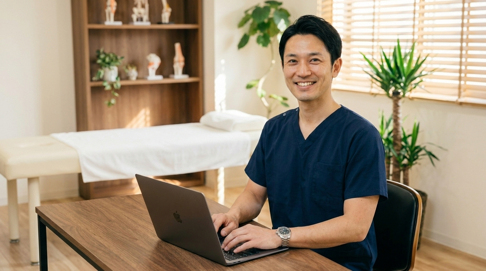
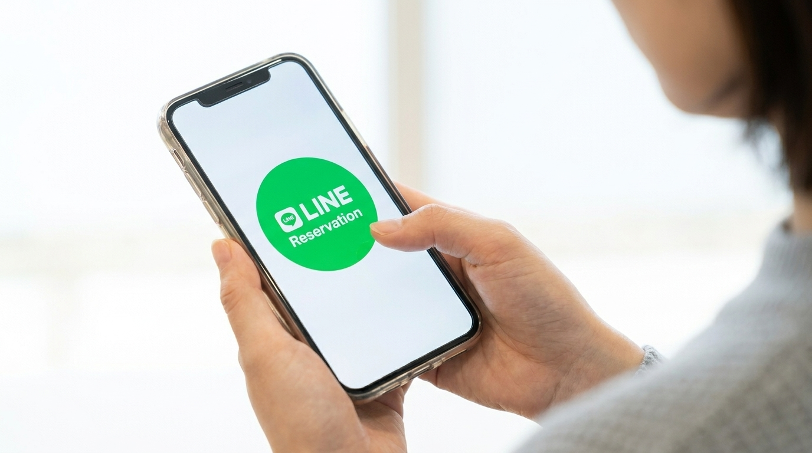

孤独な1人院長のWEBマネージャー
＼ 孤独なプレイングマネージャーへ ／

HPを「売る」業者ではありません
まとまった投資の不安も、原稿を書く苦痛もゼロへ。
初期費用０円で「WEB集客の右腕」を雇いませんか？
通常月額 9,800円のところ...
月額 6,980円 で丸投げOK！
その重たい一歩、私が代わりに踏み出します
現役院長の私に
丸投げしてください
先生の仕事は夜中にパソコンと睨めっこすることではなく、目の前の患者さんを治すことです。私が先生の「裏方」として、WEB集客をすべて引き受けます。
孤独な院長のための
まとまった投資の不安ゼロ！
WEB保守＆丸投げサポート
通常月額 9,800円
＼ 先着5名様までの特別価格 ／
6,980円/月
「初期費用0円で、どんなHPができるの？」
実際の動きやデザインをご体感ください。
高額なローン契約は一切不要。月額6,980円のみで、ドメイン・サーバーの維持から更新作業まで丸ごと引き受けます。開業時の貴重なキャッシュを守ります。
「ブログを毎日書け」と言われても現場に出ずっぱりの先生にそんな時間はありません。ヒアリングだけで、私が患者さんに刺さる文章をすべて代筆します。

患者さんの8割以上はスマホ検索です。無駄なページは削り、スクロールするだけで魅力が伝わり、ワンタップでLINE予約に直結する「集客特化型LP」を制作します。
はじめまして。現役の〇〇として活動している、高橋と申します。
私がなぜ、同業の先生向けに「初期費用0円・サブスク型」のHP制作サポートを立ち上げたのか。少しだけ私の想いを聞いてください。
独立開業。それは夢の始まりであると同時に、強烈な「孤独」との戦いの始まりでもあります。
朝から晩までベッドの前に立ち、患者さんの痛みに向き合うプレイヤーとしての顔。そして、誰もいない夜の院内で、売上や集客の不安に押し潰されそうになる経営者としての顔。
「集客しなきゃいけない。HPを作らなきゃいけない。」
頭ではわかっているのに、誰もやり方を教えてくれない。相談できる相手もいない。クタクタに疲れた体でパソコンを開いても、何から手をつけていいかわからず、結局何もできないまま朝を迎える…。
そんな「行動したくてもできない」もどかしさと不安を、私も痛いほど経験してきました。
勇気を振り絞って制作会社に相談しても、「初期費用30万円です」という高額な見積もりに足がすくみ、投資に踏み切れない。
「先生、やり方は教えますので、院の強みを原稿にまとめてください」「SEOのために毎日ブログを書いてください」と言われる。
彼らの言うことは「正論」かもしれません。
しかし、現場で戦い疲弊しているプレイングマネージャーに、そんな時間も気力も残っていないのです。正論を突きつけられ、さらに「行動できない自分」を責めてしまう先生を、私は何人も見てきました。
私は気づきました。
孤独な1人院長に本当に必要なのは、立派なHPの作り方や集客のノウハウを「教える」業者ではありません。
不安で身動きが取れなくなっている先生の隣に立ち、「大丈夫です。ここは私が代わりにやっておきますから、先生は休んでください」と言ってくれる『右腕（マネージャー）』です。
だから私は、「HPを売る業者」になるのをやめました。代わりに、先生の院の「WEB担当マネージャー（裏方）」になることにしたのです。
高額な初期投資という「最大の不安」を取り除くために、「初期費用0円のサブスク（月額制）」にしました。
原稿を考える時間も、コラムを書く気力もないとわかっているから、私が「同業者の知識」を使って代筆し、保守管理まで丸ごと引き受けます。
先生はもう、夜の院内でパソコンと睨めっこし、孤独に悩む必要はありません。私という「WEB担当の右腕」に任せて、先生は目の前の患者さんを治すこと、そして少しでも早く帰って体を休めることに専念してください。
孤独な1人院長の裏方として、私が先生の院を全力でサポートします。
LINEで無料相談・ヒアリング
お気軽にご相談ください。得意な施術などをLINEでお伺いします。
サブスクリプション登録
クレジットカードにて月額プラン（初期費用0円）へのご登録をお願いします。
制作・ご確認（修正）
写真素材をいただき、私が原稿を代筆してHPを制作します。
完成！独自ドメインで公開
内容にご納得いただけましたら、独自ドメインを取得しネット上に公開します！